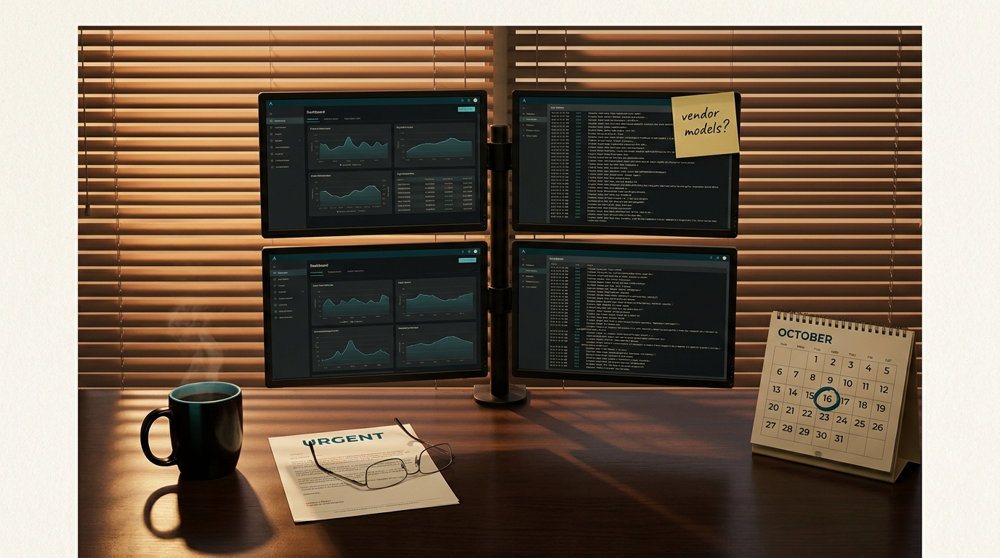
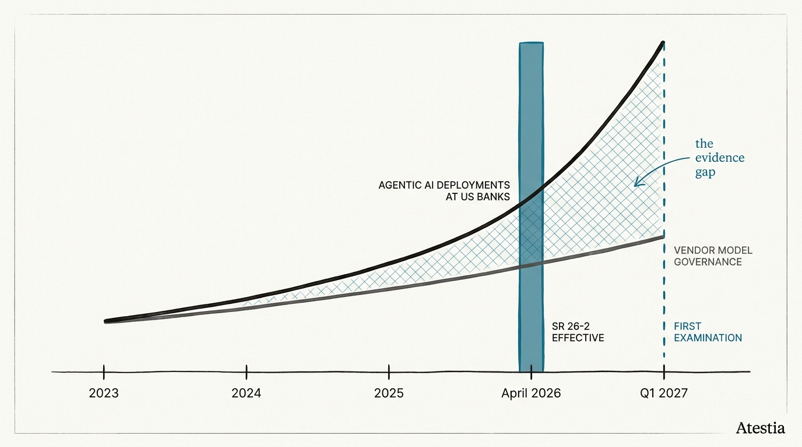
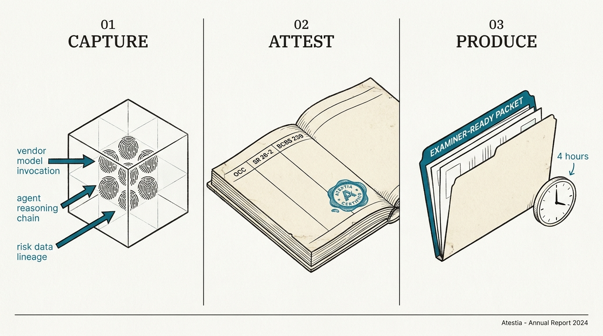
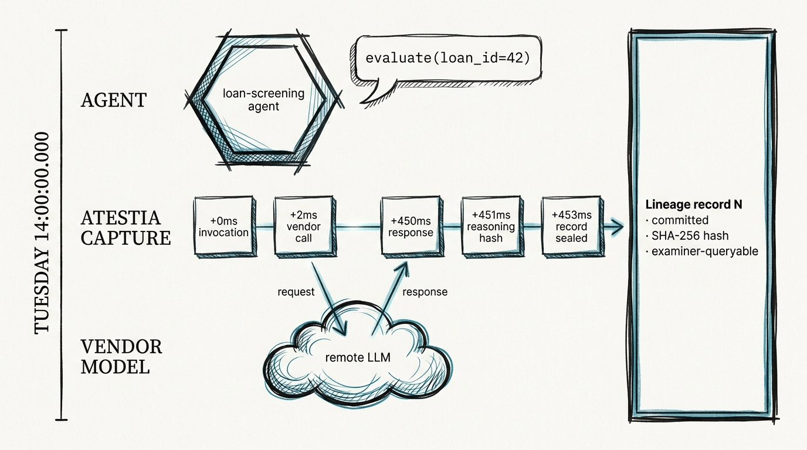
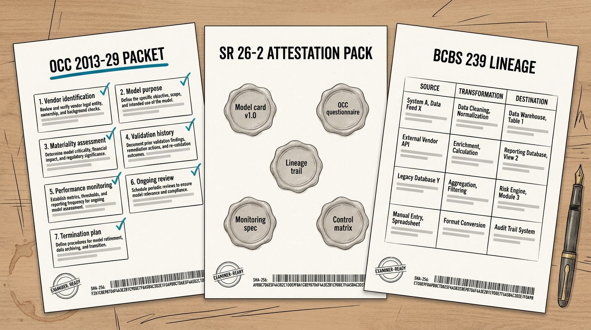
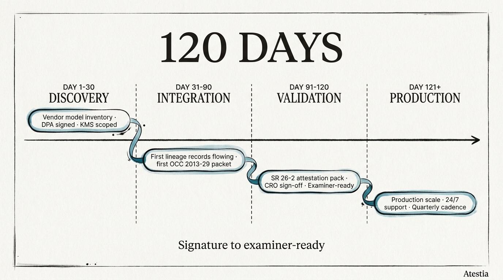

A self-guided demo · 12 minutes · no sales call required
No name-drops. No sales pitch. Nine short scenes from the perspective of the buyer — what you find on your desk, what you need to do about it, and what Atestia gives you to do it with.
You walk in Monday morning. There's an unfolded memo on your desk. The CRO's executive assistant printed it personally. Single sentence on the top sticky note: "Need to talk Tuesday."
Memo — from CRO
Three lines of business deployed agentic AI tools last year without going through the model risk governance flow. Commercial credit. Treasury services. The Wealth desk. None of it surfaced in our vendor model inventory because nobody called it a "model".
The OCC's SR 26-2 examination cycle begins Q1 2027. We have eight months.
I need an answer by Friday on whether we can produce examiner-ready evidence for these three deployments without ripping them out. — CRO

Scene illustration generating…The lines of business didn't think they needed to file with you. Their reasoning was internally consistent:
"It's not a model — it's just an LLM wrapper"
Commercial credit deployed a Bedrock-based loan-screening assistant in Q2 2025. The vendor LLM never wrote the credit decision; it generated explanations and suggested next steps. From the LOB perspective, no model risk.
But SR 26-2 Section III.A pulled vendor LLMs into model risk scope when the institution's agent calls them. The reasoning chain the LLM produced influenced the loan officer's recommendation. That's a model in the supervisory definition.
You have no record of which prompts produced which recommendations, which vendor model versions were in play, which decisions were affected, or whether the customer's protected-class characteristics ever entered the prompt context. You need to reconstruct it. From logs scattered across Azure, the agent platform, and the credit officer's email.
"It runs in the cloud — the vendor owns the model"
Treasury services deployed an LLM-driven liquidity recommendation tool. The vendor (a name brand SaaS) said they handled compliance. The LOB filed nothing with you.
SR 26-2 explicitly says: when the bank invokes a vendor model, model risk accountability stays with the bank. Not the vendor. The vendor's SOC 2 covers their operational security; it does not cover your model risk obligation.
You need a vendor model inventory for the treasury tool. You need invocation lineage for every recommendation it produced that influenced a treasury decision over the past 12 months. You need a packet examiner-ready by Q1 2027.
"It's a productivity tool, not a decisioning system"
Wealth deployed Claude Desktop and ChatGPT Enterprise to 200 advisors as productivity assistants. No governance file. No vendor questionnaire.
If those advisors used the tools to draft client-facing recommendations, or to summarize a prospectus before suggesting an allocation, the tool influenced the advice. Reg BI and the SEC marketing rule apply. So does SR 26-2 if any of those recommendations touched a credit product.
You need to know what prompts your advisors ran, what answers they got, and whether any output is reachable from a regulator's discovery request. The vendors do not give you that visibility by default.

Timeline diagram generating…You start to write the answer to the CRO's question. Halfway through paragraph three, you realize you don't have a tool to do this with.
You start searching.
What does Atestia do, exactly? ↓Atestia is one piece of open-source software that sits between your AI agents and the vendor models they call. Every invocation is captured in a canonical schema, attested with a hash chain, and made queryable. When the examiner asks, you generate the packet.

Three-panel diagram generating…Capture
Every vendor model invocation. Every reasoning chain. Every risk data lineage event.
A small open-source server registers as an MCP tool with Bedrock, Claude Desktop, LangChain, or any MCP-compatible agent runtime. When the agent invokes a vendor LLM, Atestia captures a structured record: vendor model identity, the SHA-256 hash of the input, latency, response hash, decision context (e.g. loan_id, customer_id), and the agent's reasoning chain.
No raw payload is captured. Only hashes plus structured metadata. This is the privacy property your InfoSec team will care about.
Attest
Hash chain. Customer-held KMS. 7-year retention. Tamper-evident.
Each lineage record is sealed with a hash that incorporates the previous record's hash. The chain is signed with a key your KMS controls. If an internal user or external attacker modifies a record, the chain breaks. The break is detectable in seconds.
7-year retention is the default. Customer-held CMK is supported in Enterprise. Storage is your S3 bucket plus your Snowflake warehouse — Atestia stores nothing customer-side for long-term retention.
Produce
OCC 2013-29, SR 26-2, BCBS 239, ECOA Reg B. On demand.
Five generators. Given a vendor model identifier and a date range, each generator materializes the regulator-ready packet — JSON for downstream tooling and PDF for the examiner. The OCC 2013-29 generator produces the 47-field packet across 7 sections. The SR 26-2 generator produces the 5-artifact attestation pack.
Target SLA at Tier-1 GA: machine-generated draft in under 60 seconds, analyst-reviewed examiner-ready packet in under 4 hours. The bottleneck is your MRM analyst's sign-off, not Atestia's compute.
Here is exactly what happens, end to end, when a credit officer at your bank asks the loan-screening agent a question about a $1.2M commercial real estate application. Atestia is already installed.

Sequence diagram generating…Officer asks the agent a question
"Is the borrower's debt-service coverage above our threshold given the rent roll?"
The agent runtime (Bedrock AgentCore) receives the request. Before invoking the vendor LLM, the agent calls the registered Atestia MCP tool to start a new lineage record.
// agent runtime calls Atestia first await tier4.credit.evaluate({ customer_id: "CUST-8821", decision_context: "DSC threshold review", vendor_model: "anthropic.claude-3-5-sonnet" })
Atestia captures the invocation record
SHA-256 of input. Vendor identity. Timestamp. Decision context.
The record is created in SQLite WAL. The raw prompt is NOT captured — only the hash. This protects PII and customer-confidential information while keeping the record cryptographically tied to the actual input.
A correlation ID is returned to the agent runtime so the response can be tied back to the same lineage record.
The vendor model executes
Standard LLM call. No interception. No latency cost to Atestia.
Atestia is not a proxy. It does not sit in the request path. The vendor LLM call runs at full speed. Atestia adds approximately 2 milliseconds at the start (record creation) and 3 milliseconds at the end (record sealing). This matters for high-throughput agentic deployments — Atestia is not the bottleneck.
Reasoning chain captured
Agent's thinking flow recorded for ECOA Reg B defensibility.
If the agent used multi-step reasoning (chain-of-thought, tool calls, intermediate state), Atestia records the thinking trace. This is mandatory for ECOA Reg B adverse-action defensibility — for a denied loan, you must be able to reconstruct the chain that led to the denial.
Record sealed. Hash chain advanced.
Examiner-queryable. Immutable. Tied to your KMS key.
The lineage record is sealed with a hash that incorporates the previous record's hash. The seal is signed with a key held in your KMS. The record is now queryable by your examiner team using vendor model ID, customer ID, date range, or decision context.
Total time added to the agent's response: ~5 milliseconds. The credit officer doesn't notice. Your MRM team does.
The open-source reference implementation is on npm under MPL-2.0. Your engineering team can install it in your sandbox this afternoon. The production-grade version with customer-held KMS, named indemnification, and 24/7 support is a contract — but the architecture is provable today.
Step 1 — Install
# takes about 60 seconds npm install @atestia/tier4-mcp-server npx tier4-mcp-server
Step 2 — Register with your agent runtime
// example: Claude Desktop / MCP config { "mcpServers": { "atestia": { "command": "npx", "args": ["@atestia/tier4-mcp-server"] } } }
For AWS Bedrock AgentCore
Add Atestia as a tool in your agent definition. Atestia's tools auto-register.
# agent.yaml tools: - mcp_server: "@atestia/tier4-mcp-server" auto_register: true
For LangChain (TypeScript or Python)
Atestia's tools register as LangChain Tools via the MCP adapter.
# Python from langchain_mcp import MCPToolKit toolkit = MCPToolKit(server="@atestia/tier4-mcp-server") tools = toolkit.get_tools() # 10 Atestia tools registered
For your own internal agent runtime
Implement the MCP stdio client interface. The spec is public.
If your bank has built its own agent runtime, you implement the standard Anthropic Model Context Protocol stdio client interface and Atestia is a drop-in tool provider. The Tier-4 specification at tier4.org/spec documents the MCP wire protocol Atestia speaks.
When the examiner asks for OCC 2013-29 evidence for vendor model X over the past quarter, your MRM analyst opens the Atestia Compliance Hub, selects the model, picks the date range, clicks Generate. Four hours later the PDF is in their hand for sign-off. Here is what's in it.

Packet diagram generating…OCC 2013-29 packet
47 fields across 7 sections. 4-hour SLA.
SR 26-2 attestation pack
5-artifact bundle. Materialized quarterly.
BCBS 239 lineage
Column-level provenance. Y-14A/Y-14Q ready.
For every column in your risk-data aggregation report that traces back to an agentic AI invocation, BCBS 239 lineage shows the exact vendor model, prompt hash, and reasoning chain that contributed. Maps to all 14 BCBS 239 principles.
What the examiner gets
A single PDF with each section signed by your MRM team lead, a SHA-256 hash on the final page that ties the PDF to the underlying lineage records, and a machine-readable JSON appendix the examiner's team can ingest into their own systems. The packet is reproducible — generate it again next Tuesday and the same bytes come out.
Your CISO will read this section first. The answers are honest, not marketing.
SOC 2 status — what's actually true today
In progress, not held. Timeline is contractually committed.
Atestia is in pre-audit for SOC 2 Type 1, targeting Q1 2027. Type 2 (six-month observation period) targets Q3 2027. The interim control matrix is documented under Vanta and is available to your CISO under NDA today.
For Tier-1 enterprise customers, the Master Services Agreement includes specific timeline commitments for SOC 2 Type 1 and Type 2 with contractual remedies if those dates slip. Read the MSA template before procurement starts.
Does customer data ever leave my bank?
Not for Enterprise. Hashes only for the shared multi-tenant tier.
For Enterprise tier (Tier-1 banks), Atestia deploys inside your VPC. Your KMS keys. Your S3 buckets. Your Snowflake warehouse. Atestia operates the application layer but the storage and key custody stay with you. Atestia cannot read your lineage records — they're encrypted with your CMK.
For Regional Tier-2 and Community tiers, Atestia's hosted infrastructure runs in AWS US-East-1. Even in this case, Atestia captures SHA-256 hashes of vendor model inputs — never raw payload. Your customer PII never reaches Atestia infrastructure.
What if Atestia goes out of business?
Open-source reference is MPL-2.0. The spec is CC-BY-4.0. You own your data.
The reference implementation is open source under Mozilla Public License 2.0. The Tier-4 specification is governed by an industry working group as a CC-BY-4.0 document — Atestia is the founding sponsor but not the owner. Your lineage records are in your S3 bucket in a documented open schema. Your packets are PDFs.
If Atestia ceases operations, your engineering team can continue running the reference implementation, your historical records remain queryable, and a competing vendor implementing the Tier-4 spec can drop in. The data-portability and exit-rights are built into the architecture.
Will the examiner actually accept this format?
The Tier-4 specification is being ratified through a Delaware 501(c)(6) working group with bank seats.
There is no precedent for "examiner-accepted" because no examination cycle has happened yet — the first SR 26-2 cycle begins Q1 2027. But the OCC 2013-29 packet format Atestia generates matches the long-established field schema that bank examiners have used for traditional model risk packets since 2013.
The novel layer (SR 26-2 attestation, runtime lineage capture) is being ratified through the Tier-4 Compliance Working Group, an industry body with seats for Tier-1 banks, audit firms, and regulator-adjacent observers. The first 10 Charter Member banks are authoring the format together. If your bank wants a seat at that table, talk to us about Charter Member status.
Pricing scales with vendor model count, packet volume, and support SLA tier. For your bank size and posture, this is what the conversation looks like.
$300K
Median annual · $30-50B AUM
7-day
Packet turnaround
12
OCC 2013-29 packets / yr
99.9%
Uptime SLA

Timeline diagram generating…3-month Pilot
$150K. Credits 100% toward Year-1 production.
Year-1 Production
$250K – $500K depending on volume + SLA tier.
It's 11:30 am. You've finished the walk-through. You open your email to draft the answer to the CRO's question. You pick one of three paths.
Try the open-source reference this afternoon
Your engineering team installs it in the sandbox. Free. No commitment.
If you want hands-on verification before any commercial conversation, install @atestia/tier4-mcp-server from npm. The full reference implementation is MPL-2.0 licensed. Your engineers can wire it into a sandbox agent and generate a sample packet within an afternoon.
Book a 45-minute scoped call with our Solutions Engineering team
Walk through your three deployments in detail. Get a written scope.
Bring the three deployments you mentioned to the CRO (commercial credit, treasury, wealth). Our SE walks through the Atestia integration for each, identifies the gap between today's state and examiner-ready, and writes you a scoped 90-day plan. No deck — your problem, on a whiteboard.
Book the call →Send this page to your CISO and CRO
Let them walk through it before the Tuesday meeting.
If you want your CISO and CRO to share the context before your meeting, this page is your prep brief. They walk through scenes 03, 07, and 08 (architecture, honest concerns, pricing) in 8 minutes and arrive prepared. You skip the explainer slides and go straight to the decision.
This walkthrough is provided as-is. The persona is composite. The scenario is realistic. The product is real and shipping. The npm package, the open source, the spec, the working group — all live. Try it and prove it yourself.